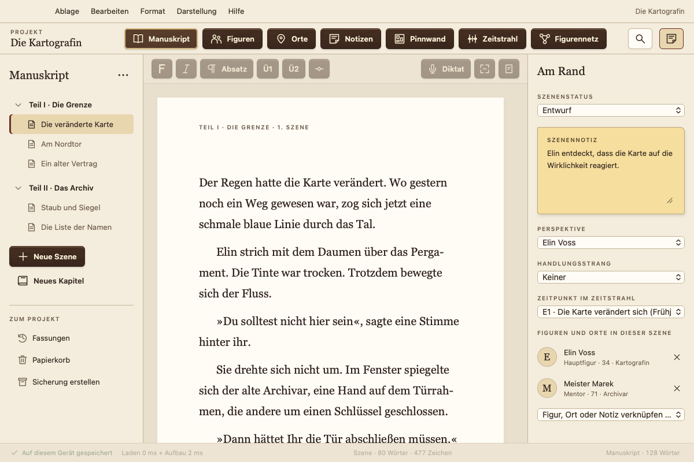
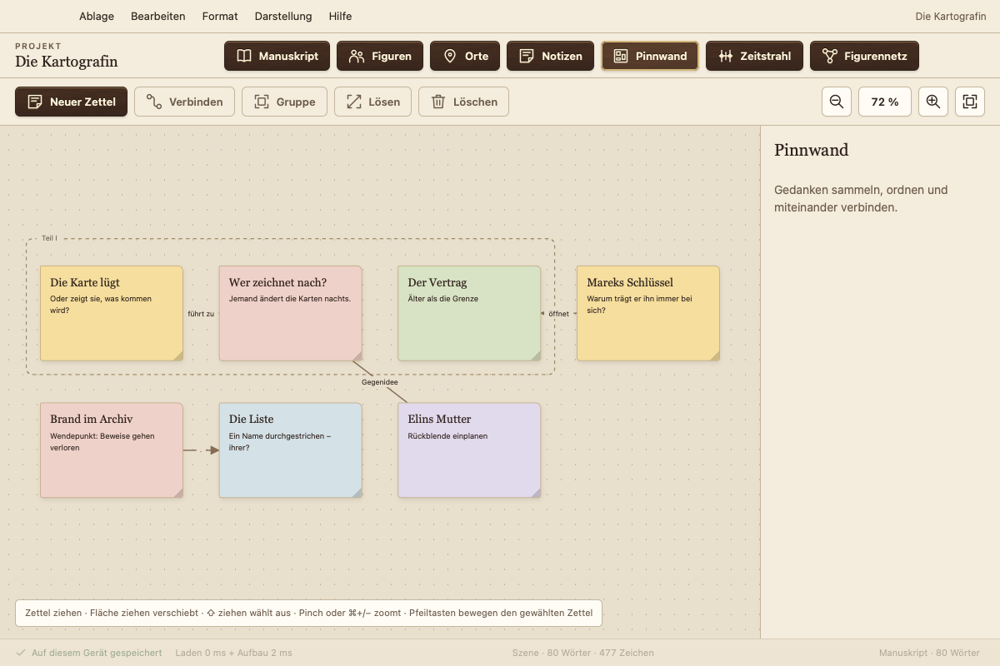
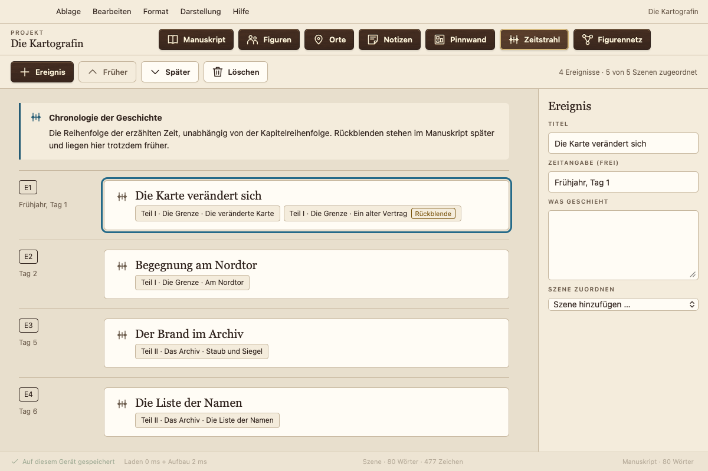
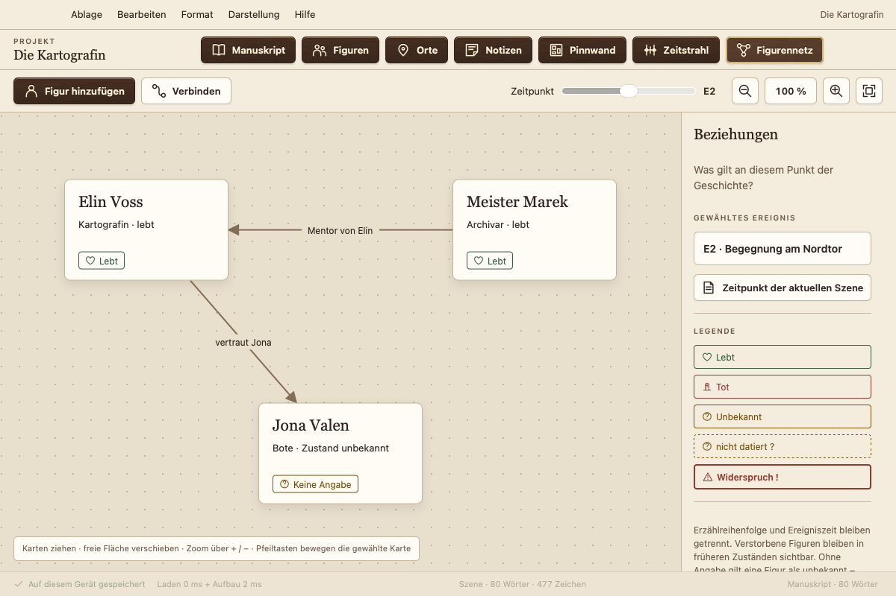
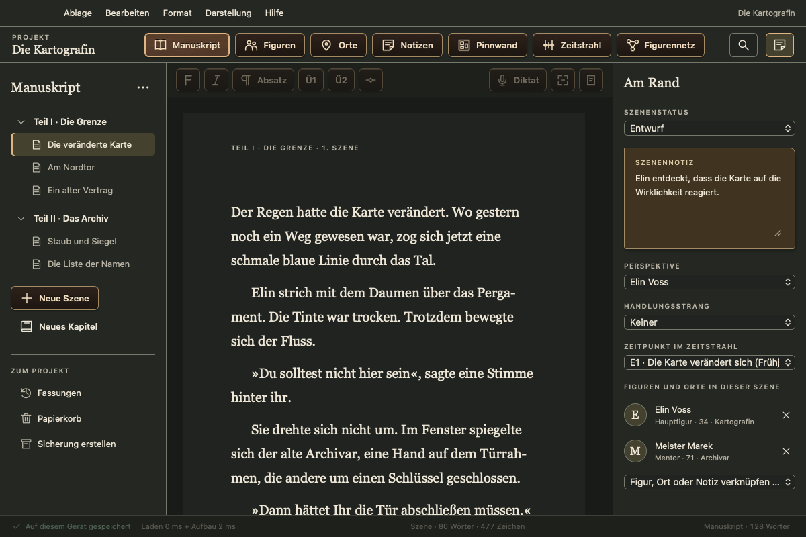

Das kostenlose Schreibprogramm für Romane
Ihr Manuskript bleibt bei Ihnen: kein Abo, kein Konto, keine Datensammlung, kein KI-Training. Für Mac, Windows, Linux und Android.
Version 0.1.4 · Testphase · 6 Sprachen

Alles für Ihr Buch an einem Ort
Kapitel und Szenen
Schreiben Sie in Szenen, ordnen Sie sie per Ziehen um und behalten Sie mit Status, Perspektive und Szenennotiz den Überblick.
Figuren und Orte
Figurenbögen mit eigenen Feldern. Atramentum erkennt, wer in einer Szene vorkommt.
Pinnwand
Zettel mit Text, Listen und Skizzen, in Gruppen und mit Verbindungen, verknüpft mit Szenen und Figuren.
Zeitstrahl
Ereignisse in erzählter Zeit. Atramentum erkennt Rückblenden, wenn die Reihenfolge im Buch von der Chronologie abweicht.
Figurennetz
Beziehungen und Zustände Ihrer Figuren zu jedem Zeitpunkt der Geschichte. Wer lebt in Kapitel 12 noch?
Normseite, Word und E-Book
Export als PDF in Normseite oder Leseexemplar, als Word-Datei, E-Book (EPUB, auch für Kindle über KDP), Markdown oder Text. Import aus Word, Scrivener, Markdown und Text.
Überarbeiten
Stilanalyse mit Lesbarkeit, langen Sätzen, Wiederholungen und Füllwörtern. Rechtschreib- und Grammatikprüfung des ganzen Manuskripts mit der Prüfung Ihres Systems.
So sieht Atramentum aus




Ihre Texte gehören Ihnen
Lokal und offline
Atramentum speichert auf Ihrem Gerät und braucht kein Internet. Es sendet keine Texte und keine persönlichen Daten.
Nichts geht verloren
Gespeichert wird bei jeder Änderung. Dazu kommen Fassungen jeder Szene, ein Papierkorb, tägliche Sicherungen und ein Rettungswerkzeug.
Auf allen Geräten
Abgleich über einen Ordner Ihres Cloud-Dienstes (iCloud Drive, Dropbox, OneDrive …), ohne Konto bei uns.
Herunterladen
| System | Download | Anleitung |
|---|---|---|
| Mac macOS 13+, Apple-Chip und Intel | .dmg | Installation Mac |
| Windows 10 und 11, 64 Bit | Setup (.exe) | Installation Windows |
| Linux Ubuntu, Debian, Mint | .deb | Installation Linux |
| Linux alle anderen | AppImage | Installation Linux |
| Android 7 und neuer, Telefon und Tablet | .apk | Installation Android |
Atramentum ist nicht bei Apple notarisiert und nicht mit einem Microsoft-Zertifikat signiert. Zertifikate kosten jedes Jahr Geld, und Atramentum ist kostenlos. Deshalb fragen macOS und Windows beim ersten Start einmal nach. Die Anleitungen zeigen, wie Sie trotzdem öffnen. iPhone und iPad folgen über den App Store.
Testphase: Bitte legen Sie regelmäßig Sicherungen an und melden Sie, was Ihnen auffällt. Prüfsummen und Rettungswerkzeuge stehen auf der Release-Seite.